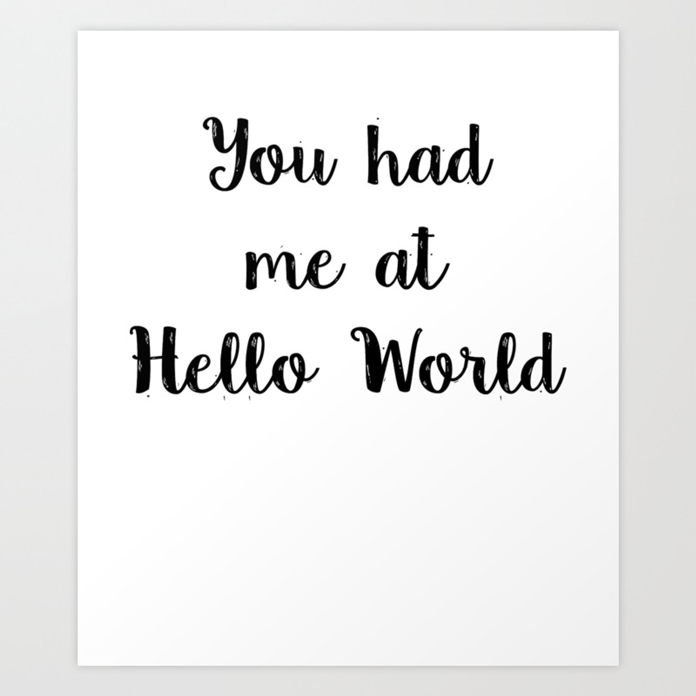

Sub/sup lietojums
Sub tiek izmantot, tad ja ir nepieciešams kādu vārdu vai frāzi ir vajadzība uzrakstīt subscriptā jeb apakšrakstā, piemēram, izmantojot fizikas formulā, lai noteiktu kāda lieluma piederību.
Attiecīgi sup izmanto, lai paceltu vārdu vai frāzi superscriptā jeb augšrakstā, piemēram, lai uzrakstītu kāda skaitļa pakāpes.